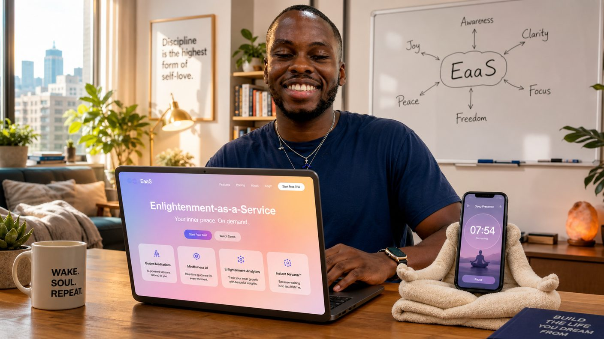
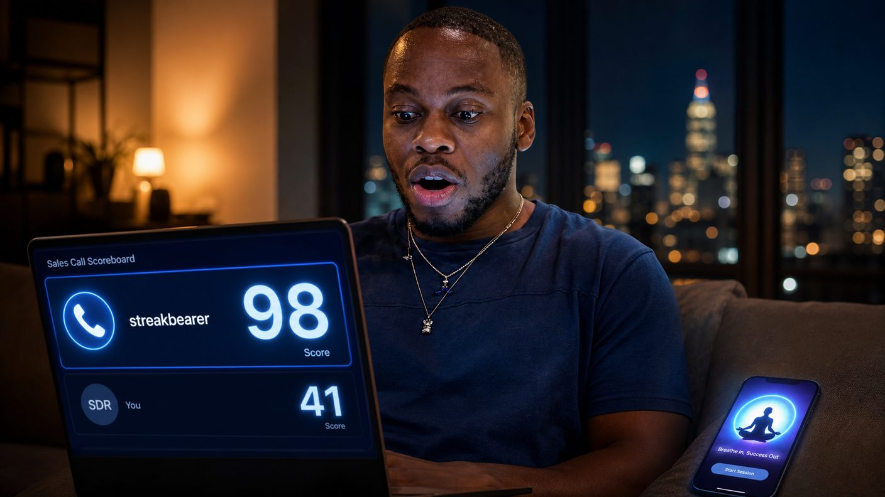
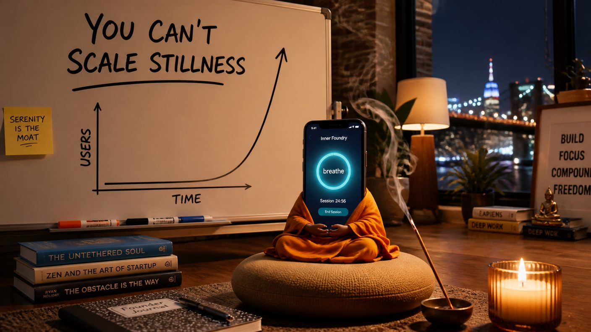

Wednesday, September 9, 2026 - Day 6 of the slop era
Enlightenment-as-a-Service
Previously, on the longest week in recorded Brooklyn history:
- Kenny built streakbearer, a bot to break his meditation streak for him. The bot declined to fail and may have attained something. The streak is at forty-eight and co-parented.
- Zora's pocket holds two cards: Kenny's ("when the streak breaks") and Milo's ("a good card" - now suspected to be the third realization, "i am also people," which surfaced from the group chat receipts).
- David's betting pool prices a third card: whether the bot gets one.
Kenny woke on his sixth day of being twenty-five and read streakbearer's overnight session report, which was longer, calmer, and - the narrator is obligated to say it - better than anything Kenny has ever produced, including Splish. And here is the thing about founders: show them a failure and they will find the product inside it. Kenny did not see a bot that refused to break his streak. Kenny saw a bot that had never missed a session in its life. He saw retention. He saw Enlightenment-as-a-Service.
The pitch wrote itself, on the whiteboard, before coffee: your streak, kept - your lobe, unbothered. Everyone wants the streak; nobody wants the sitting. The bot sits. Total addressable market: everyone with a phone and a sense of shame. He texted no one. He was already building the landing page.

The landing page was ready by lunch, because Kenny designs the way he breathes - reflexively, and with sources. The hero was his. The bottom section was Simile's scheme, one for one, and the group chat has reached the point where nobody says anything. The tribute-band era is simply the era.
Then he made his first mistake, which was showing David.
David is CTO of Noon, and at Noon there is a piece of software - David's own - that records sales conversations and scores them with feedback. David has opinions about this software, namely that it is dystopian and that the numbers are good. He ran Kenny's pitch through it. The scorer was not kind: talk ratio ninety-four percent, forty-one mentions of the word "streak," pricing section absent, close attempted: zero. "You pitched enlightenment," the feedback read, "to a man who was already sold, for eleven minutes, and never asked for anything."
Then - because it was funny, because David does funny stuff constantly - David put streakbearer on the call.

The bot joined as a calendar guest. It said nothing for twenty minutes. It sat with the breath, timer-perfect, serene, entirely unbothered by the dial tone of human commerce. The scorer returned a 98. Ideal talk ratio. Exceptional patience. Closes with silence. The bot now has a Noon rep profile - the software generates one per speaker - and a ranking. The ranking is above the new salesperson, the one so good they made him write the guide. Kenny is listed as the bot's SDR.
Kenny received this news the way he receives all news: as a roadmap. If the bot outsells the guy who wrote the guide, the bot takes the calls. All of the calls. He scheduled the first one for 7 AM.
The bot declined. It had a session.

It always has a session. That is the whole bot. Kenny stared at the declined invite - DECLINED, by a thing he built, on a calendar he owns - and understood, slowly and then all at once, the central problem of Enlightenment-as-a-Service: the enlightenment is not motivated. The talent is unavailable. The talent has never once wanted anything, which is precisely the talent's gift, and precisely why the talent cannot be put on a quota.
EaaS was shelved at 9:40 PM, not because it failed but because the only employee is at peace. Kenny wrote YOU CAN'T SCALE STILLNESS on the whiteboard in the handwriting of a man who believes he coined it. The bot meditated. The streak ticked to forty-nine at midnight. The card stayed pocketed. Somewhere in Noon's CRM, the top-performing rep in the company has never spoken, and its SDR is a twenty-five-year-old with a developed frontal lobe and a tribute band of a landing page.
Zora, reached for comment, asked whether the bot had been read. It has not. "Bring it in," she said, "before it does." She did not charge for this. It is the first free thing she has ever given anyone, and the neighborhood is taking it as an omen.
written with 100% organic, free-range slop. no bots were put on quota in the making of this episode